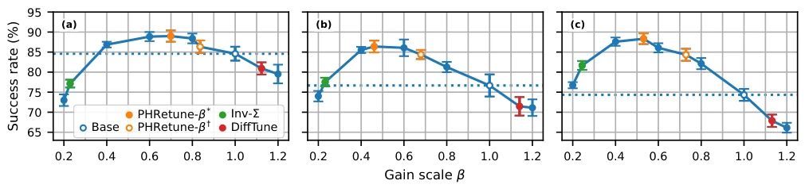
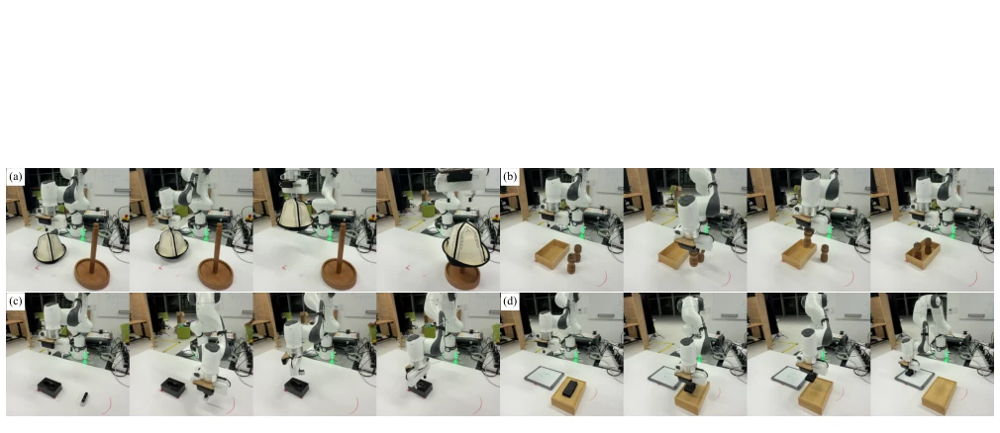

This paper pours cold water on robotics researchers who directly inherit impedance controller parameters as "family heirlooms". The authors developed an offline method called PHRetune, claiming that without running new data or retraining policies, one can tune controller parameters for Diffusion and VLA policies using only demonstration data, and it even outperforms baseline methods requiring extensive trial-and-error in the real world. This sounds like "getting performance improvements for free", which is indeed quite appealing. But upon closer thought, this approach essentially leverages energy conservation, shrinking the actions predicted by the policy or softening the springs to match the energy level of the demonstration data. Although the experimental data is indeed impressive, with a 9.4 percentage point improvement on LIBERO, this method highly depends on the quality of demonstration data; if the demonstrations themselves are "unstable", the tuned parameters might just be "precisely unstable". Moreover, it assumes a linear impedance model; for highly nonlinear contact tasks, will this "forcing the foot to fit the shoe" energy matching fail? After all, forcing actions predicted by the policy into a fixed energy budget sounds a bit like putting reins on a wild horse; the horse doesn't run, and the reins break first.
In the field of embodied intelligence, Diffusion and VLA policies (such as Diffusion Policy [1]) typically execute actions through downstream impedance controllers. However, the stiffness (stiffness) and damping (damping) gains of these controllers often directly adopt default values or teleoperation parameters from data collection, rather than being optimized for specific policies [6, 7, 8]. This "one-size-fits-all" approach seriously affects task success rates, because controller parameters directly determine how actions predicted by the policy are converted into actual motion and interaction forces [4, 5]. Existing work attempts to solve this problem, but most have obvious shortcomings: some methods incorporate compliance (compliance) directly into policy learning, changing action representations or training pipelines rather than adjusting existing controllers [10, 11, 12]; some methods like DiffTune [13] rely on precise dynamic models for gradient optimization, which are difficult to obtain in real-world scenarios; other methods like Inv-Σ [14] only heuristically adjust based on the variability of demonstration data, lacking theoretical support; even worse, methods like Tune-to-Learn [9] require numerous evaluation rollouts to search for gains, with extremely low efficiency. This paper aims to solve this pain point: how to derive fixed controller gains adapted for frozen policies using only existing task demonstration data, without retraining policies, without needing dynamic models, and without additional robot interaction.
方法Method
PHRetune的核心思想是利用Port-Hamiltonian（端口哈密顿）系统理论，将策略预测的动作与演示数据的能量/努力预算进行匹配，从而推导出控制器增益。整体流程分为两个关键阶段：首先是离线构建代理模型，其次是基于能量匹配推导增益。第一阶段，作者构建了一个“动作端口代理模型”（Action Port Surrogate）。这是一个基于灰色神经网络的Port-Hamiltonian模型，利用演示数据（状态、动作、下一状态）进行拟合，学习末端执行器的动力学特性，包括动能、势能及耗散项。该模型不重建全关节空间，而是专注于策略交互的末端执行器层面。通过拟合，模型能够估算出策略预测动作所对应的“努力”（effort）和“能量”（energy）。第二阶段，作者将冻结的策略应用于演示数据的观测帧（Shadow Mode），计算策略预测动作序列在代理模型中的能量消耗。接着，将预测的能量/努力与演示数据中计算出的90%分位数预算进行比较，得出一个允许的动作缩放因子（action scale, s*）。最后，利用“阻抗设定点端口模型”（Impedance Setpoint Port Model），这是一个基于线性阻抗模型的解析关系，将动作缩放因子映射为控制器的刚度（kp）和阻尼（kd）增益。具体而言，通过匹配虚拟弹簧能量（Virtual Spring Energy），推导出增益缩放系数β* = (s*)^2，从而在保持阻尼比不变的情况下，实现控制器的“软化”。整个过程完全离线，无需任何额外的机器人交互或策略重训。
The core idea of PHRetune is to utilize Port-Hamiltonian (Port-Hamiltonian) system theory to match actions predicted by the policy with the energy/effort budget of demonstration data, thereby deriving controller gains. The overall process is divided into two key stages: first, offline construction of a surrogate model, and second, derivation of gains based on energy matching. In the first stage, the authors constructed an "Action Port Surrogate (Action Port Surrogate)". This is a Port-Hamiltonian model based on Grey Neural Networks, fitted using demonstration data (state, action, next state) to learn the dynamics of the end-effector, including kinetic energy, potential energy, and dissipation terms. This model does not reconstruct the full joint space, but focuses on the end-effector level of policy interaction. Through fitting, the model can estimate the "effort (effort)" and "energy (energy)" corresponding to actions predicted by the policy. In the second stage, the authors apply the frozen policy to the observation frames (Shadow Mode) of demonstration data to calculate the energy consumption of the strategy-predicted action sequence in the surrogate model. Next, the predicted energy/effort is compared with the 90th percentile budget calculated in the demonstration data to obtain an allowable action scaling factor (action scale, s*). Finally, using the "Impedance Setpoint Port Model (Impedance Setpoint Port Model)", which is an analytical relationship based on a linear impedance model, the action scaling factor is mapped to the controller's stiffness (kp) and damping (kd) gains. Specifically, by matching Virtual Spring Energy (Virtual Spring Energy), the gain scaling coefficient β* = (s*)^2 is derived, thereby achieving the "softening" of the controller while maintaining a constant damping ratio. The entire process is completely offline, requiring no additional robot interaction or policy retraining.
Experiments were conducted on the LIBERO simulation benchmark (Goal, Object, Spatial) and four real-world tasks (putting on a hat, placing salt and pepper shakers, placing a camera, wiping a whiteboard). Baselines include nominal policy, Inv-Σ [14], DiffTune [13], and MtG [10]. In LIBERO simulations, PHRetune improved the success rate of Diffusion Policy by up to 9.4 percentage points, and under sparse data with 20 demonstration samples, performance approached that of the nominal policy with 50 samples. More importantly, the gains derived by PHRetune achieved the highest success rate in independent gain sweep experiments, proving its effectiveness. In real-world experiments, PHRetune also surpassed the nominal policy and all baselines on all four tasks, improving the overall success rate of Diffusion Policy from 0.50 to 0.73. Additionally, this method is also effective for VLA models such as SmolVLA and OpenVLA-OFT, not only improving success rates but also significantly reducing end-effector jerk (jerk) and acceleration, making motion trajectories closer to human teleoperation levels. Ablation studies show that energy-based gain derivation outperforms force-based derivation, and gains derived from "Shadow Mode (using only demonstration data)" are almost consistent with gains derived from closed-loop mode (using a small number of rollouts), verifying the robustness and practicality of the method.

Figure 1: LIBERO gain sweep. We report the success rate over three seeds for the (a) goal, (b) object, and (c) spatial partition of LIBERO by uniformly sweeping the gain scale. The success rate for PHRetune and baselines are highlighted. MtG is omitted from the curve and β values for Inv-Σ and DiffTune are calculated post-hoc using derived gain values.

Figure 2: Real-world manipulation tasks. (a) Placing a hat on a stand, (b) transferring salt-and-pepper mills into a tray, (c) placing a camera in its fitted holder, and (d) grasping an eraser and wiping a whiteboard.